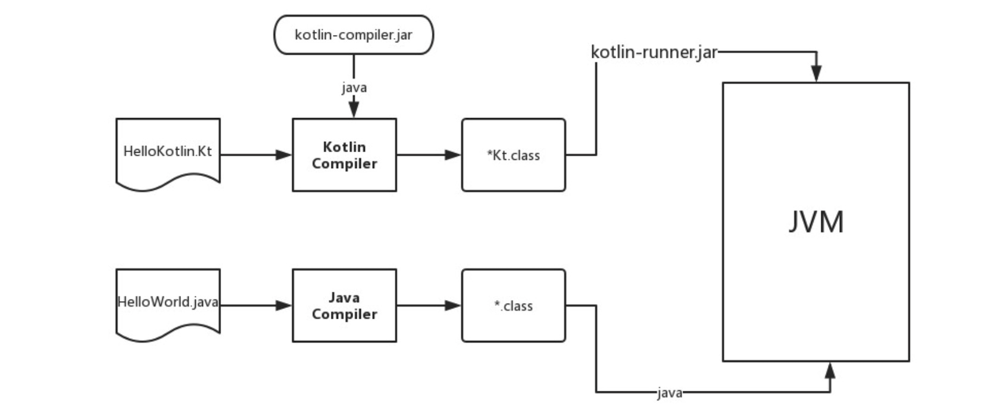
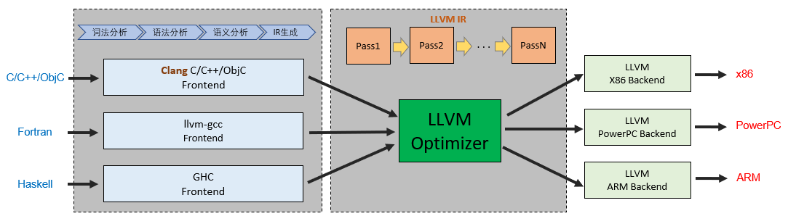

1. Kotlin简介
1.1 概述
Kotlin(俄罗斯岛屿名)由JetBrains设计开发的静态类型语言，支持JVM/ART、JS Engine、NativeCode方式运行。 兼容Java，比Java更安全(空指针检测)、更简洁(类型推导、函数式)，比Scala(数据领域Spark、Kafka、Akka项目的开发语言)更容易上手。
- 官方文档: https://kotlinlang.org/docs/home.html
- 中文站: https://www.kotlincn.net/docs/reference
- 开源库: https://github.com/jetbrains/kotlin
编译运行

注: 得到.class文件后，可使用jd-gui反编译查看Java代码。也可在IDEA中:Tools-Kotlin-Bytecode-Decompile
// 环境安装
brew install kotlin
// (1)编译生成 MainKt.class 并执行main方法
kotlinc-jvm Main.kt && kotlin com.MainKt
// (2.1)打包成jar 会自动处理包结构，并查找main函数配置主类，但没包含kotlin运行时
kotlinc -d main.jar ./src/
// 运行时需将Kotlin库包含进来, 如 java -cp kotlin-stdlib.jar
kotlin -cp main.jar:$KOTLIN_HOME/libexec/lib/kotlin-stdlib.jar com.MainKt
// (2.2)打包jar并将kotlin运行时打进jar包
kotlinc -d main.jar --include-runtime ./src/
// 即可按jar包执行, 如 java -jar main.jar
kotlin main.jar
// (3)Kotlin也可以按脚本方式执行
kotlin main.kts [args]
// (4)不传参数直接进入REPL环境；使用`kotlin`无参命令可进入Read-Eval-Print-Loop交互式编程环境，快速运行
kotlin
>>> import java.util.Date
>>> Date()
其中, 运行main.kts依赖org.jetbrains.kotlin:kotlin-script-runtime:+
import java.io.File
// kotlin main.kts -d ~/Downloads
val path = if (args.contains("-d")) args[1 + args.indexOf("-d")] else "."
File(path).listFiles { _ -> true }?.forEach { println(it) }
1.2 部署运行
Gradle构建JVM应用
执行: ./gradlew assemble后会得到Jar产物
// build.gradle
buildscript {
repositories {
mavenCentral()
}
dependencies {
// 负责Kotlin工程构建
classpath 'org.jetbrains.kotlin:kotlin-gradle-plugin:1.3.72'
}
}
plugins {
id 'java' // 项目中支持使用Java
id 'org.jetbrains.kotlin.jvm' version '1.3.72' // 支持使用kotlin(JVM)
}
// 源码兼容JDK版本
sourceCompatibility = 1.8
repositories {
// 组件依赖地址 https://repo.maven.apache.org/maven2/
mavenCentral()
}
dependencies {
// 依赖 Kotlin JVM执行环境
implementation 'org.jetbrains.kotlin:kotlin-stdlib-jdk8:1.3.72'
}
compileKotlin {
// kotlin编译的字节码目标版本
kotlinOptions.jvmTarget = "$sourceCompatibility"
}
Web RESTFul
# 社区版IDEA不支持直接创建Gradle的Spring项目，可从Spring官网下载
# https://spring.io/guides/tutorials/spring-boot-kotlin/
curl https://start.spring.io/starter.zip -d language=kotlin -d dependencies=web,mustache,jpa,h2,devtools -d packageName=com.chavin.demo -d name=Demo -d type=gradle-project -o demo.zip
解压后打开，根路径build.gralde.kts如下，构建部署task: ./gradlew bootRun
// build.gradle.kts gradle 7.4.1
import org.jetbrains.kotlin.gradle.tasks.KotlinCompile
plugins {
// spring boot
id('org.springframework.boot') version '2.7.0'
// spring 包管理
id('io.spring.dependency-management') version '1.0.11.RELEASE'
// kotlin-jvm
kotlin('jvm') version '1.6.21'
// kotlin plugin spring
kotlin('plugin.spring') version '1.6.21'
// kotlin plugin jpa
kotlin('plugin.jpa') version '1.6.21'
}
// 源码兼容JDK版本
java.sourceCompatibility = JavaVersion.VERSION_18
tasks.withType<KotlinCompile> {
kotlinOptions {
freeCompilerArgs = listOf('-Xjsr305=strict')
jvmTarget = '18'
}
}
repositories {
// 组件依赖地址 https://repo.maven.apache.org/maven2/
mavenCentral()
}
dependencies {
implementation('org.springframework.boot:spring-boot-starter-data-jpa')
implementation('org.springframework.boot:spring-boot-starter-mustache')
implementation('org.springframework.boot:spring-boot-starter-web')
implementation('com.fasterxml.jackson.module:jackson-module-kotlin')
implementation('org.jetbrains.kotlin:kotlin-reflect')
implementation('org.jetbrains.kotlin:kotlin-stdlib-jdk8')
developmentOnly('org.springframework.boot:spring-boot-devtools')
runtimeOnly('com.h2database:h2')
testImplementation('org.springframework.boot:spring-boot-starter-test')
}
JavaScript
编译后的js需依赖kotlin.js，通过kotlinc-js编译
// MyApp
package com.chavin.js
fun say(){
println("Hello world")
}
<script src="kotlin.js" />
<script src="MyApp.js" />
<script>
(function(){
// 用 文件名.包名.方法名 引用
MyApp.com.chavin.js.say()
})();
</script>
Kotlin Native
Koltin Native利用LLVM来生成本地机器码，同时支持与C互操作。
LLVM
Low Level Virtual Machine是开源跨平台的编译器基础设施；LLVM本身并不是编译器，LLVM架构提供了完整编译系统的中间层，包括：
- Fronted: 接受源码输入，负责词法分析、语法分析、语义分析(AST)、生成IR(RISC汇编语言)。
- Optimizer: 针对IR，基于抽象语法树(AST)做进一步优化。
- Backend: 由于后端生成可执行的机器码。

注：
- LLVM前端支持的语言：C、C++、Java字节码、Objective-C、Swift、Python、Ruby、Rust、Scala、C#等
- LLVM后端支持指令集架构：x86、x86-64、ARM、MIPS、PowerPC以及RISC-V等
命令行：
# konan工具可在 https://github.com/JetBrains/kotlin/releases ,执行后生成 main.kexe
kotlinc-native main.kt -o main
Gradle：
在IDEA创建 Kotlin Multiplatform - Native Application 项目
// build.gradle.kts
// ./gradlew nativeBinaries 生成 .kexe 可执行文件
plugins {
kotlin("multiplatform") version "1.7.0"
}
group = "com.chavin"
version = "1.0-SNAPSHOT"
repositories {
mavenCentral()
}
kotlin {
val hostOs = System.getProperty("os.name")
val isMingwX64 = hostOs.startsWith("Windows")
val nativeTarget = when {
hostOs == "Mac OS X" -> macosX64("native")
hostOs == "Linux" -> linuxX64("native")
isMingwX64 -> mingwX64("native")
else -> throw GradleException("Host OS is not supported in Kotlin/Native.")
}
nativeTarget.apply {
binaries {
executable {
entryPoint = "main"
}
}
}
sourceSets {
val nativeMain by getting
val nativeTest by getting
}
}